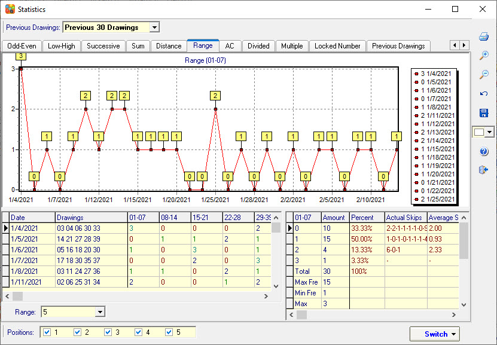
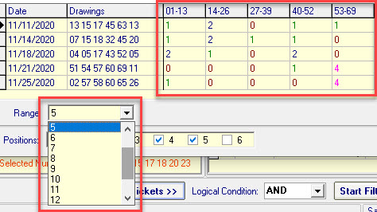

Click menu->Statistics->Range to open the Range
analysis.
The program automatically splits all numbers into multiple number groups, then counts the number of hits of each range.

Use the Powerball as an example, as in the following screenshot, the 1-69 numbers automatically split into 5 groups of numbers.
Group 01-13: Counting the winning number of hits in the number group 01-13.
Group 14-26: Counting the winning number of hits in the number group 14-26.
Group 27-39: Counting the winning number of hits in the number group 27-39.
Group 40-52: Counting the winning number of hits in the number group 40-52.
Group 53-69: Counting the winning number of hits in the number group 53-69.

[Top]
Home
Page: http://www.samlotto.com
Support:support@samlotto.com
Copyright: © SamLotto Lottery Software Team All rights reserved.